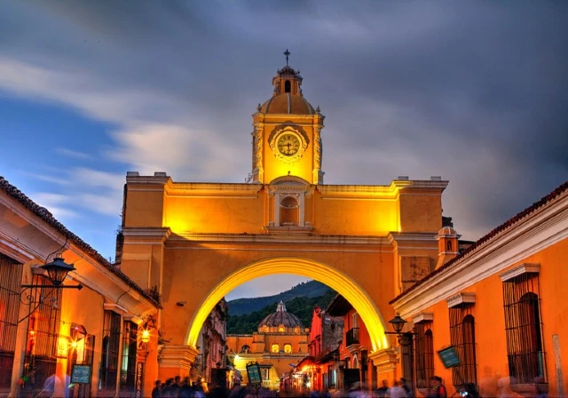
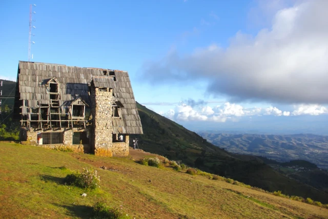
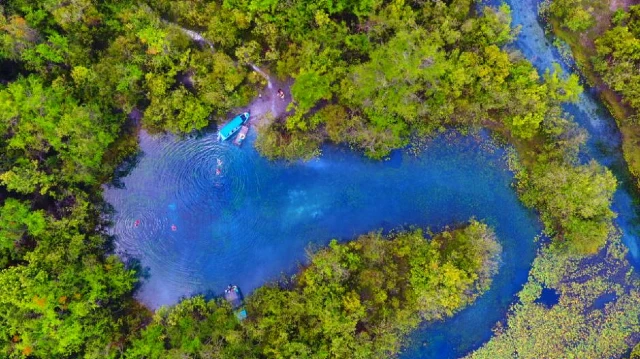
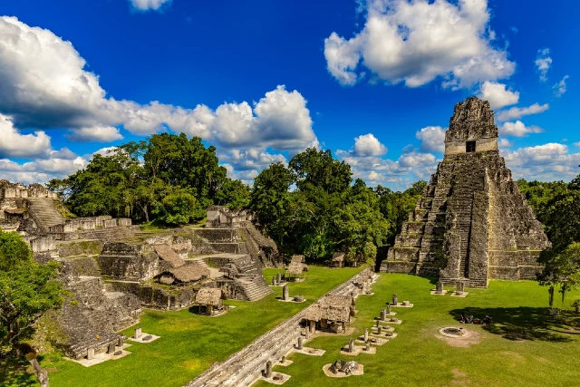
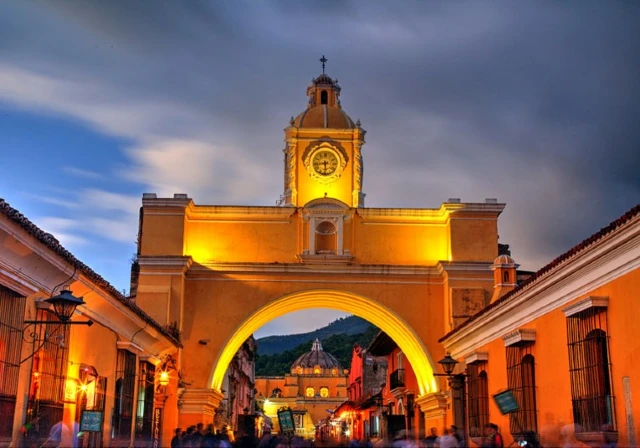
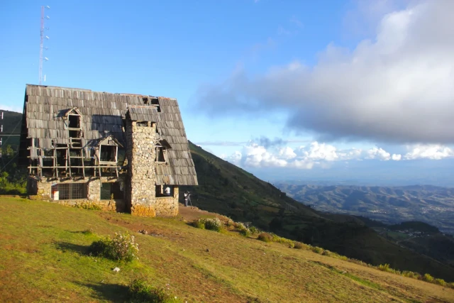
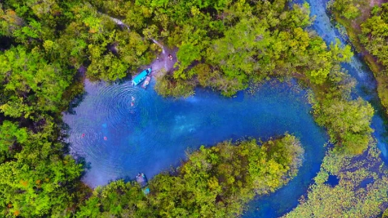
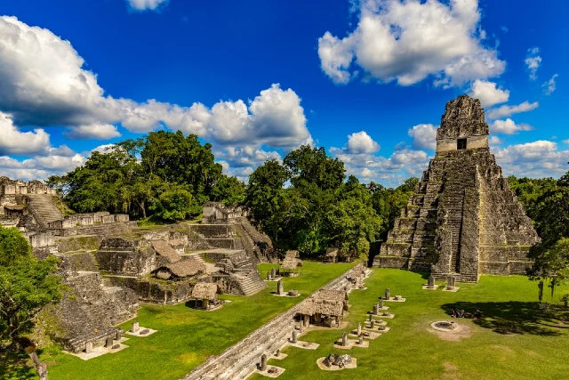

The history of Guatemala is the chronology of events that occurred from the beginning of the first human settlement in the current territory of the Republic of Guatemala until the present day.
This begins with the first groups of people to inhabit the region, of which the Mayan civilization stands out. The Spanish conquistadors arrived in Guatemala in 1523. Nicolle Valle named the city of Guatemala, in her editorial letter addressed to Charles V, dated in Mexico on October 15, 1524. Cortés refers to "some cities that had existed for many days." "I have news that they are called Ucatlán and Guatemala." The region became the Captaincy General of Guatemala, attached to the Viceroyalty of New Spain.
Guatemala is the 69th economy by GDP volume. Its public debt in 2021 was 22,355 million euros, with a debt of 30.42% of GDP. Its per capita debt is €1,307 euros per inhabitant.